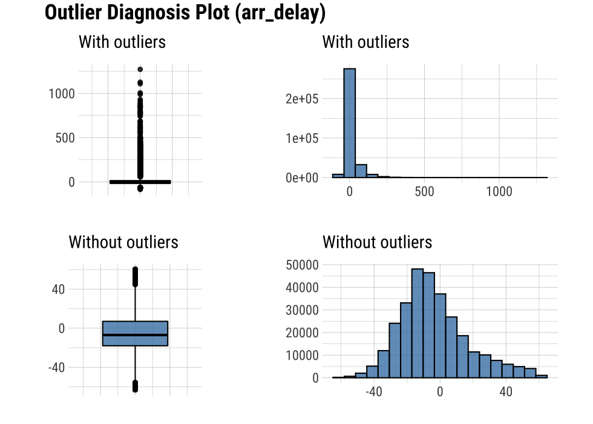
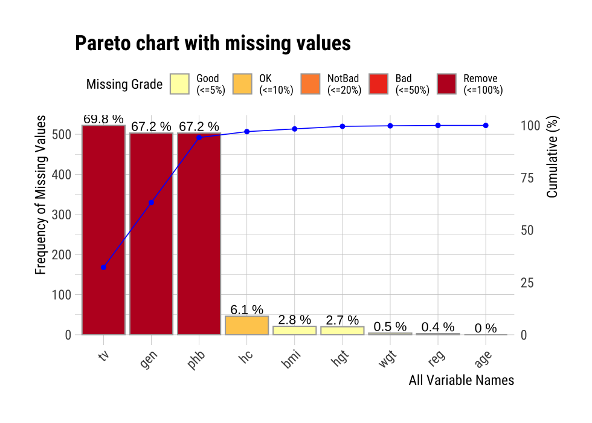
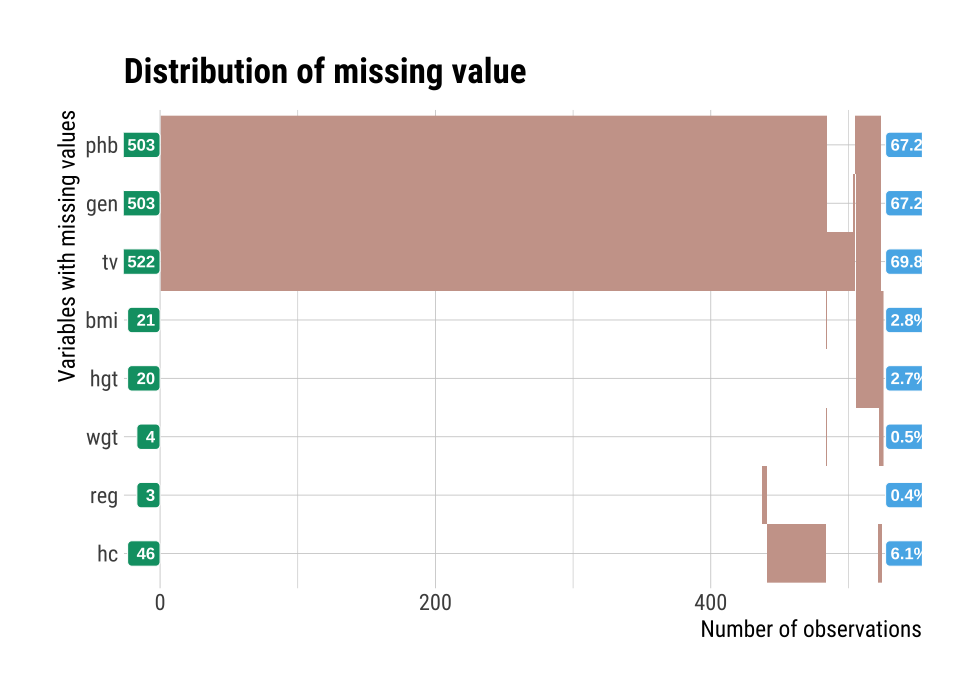
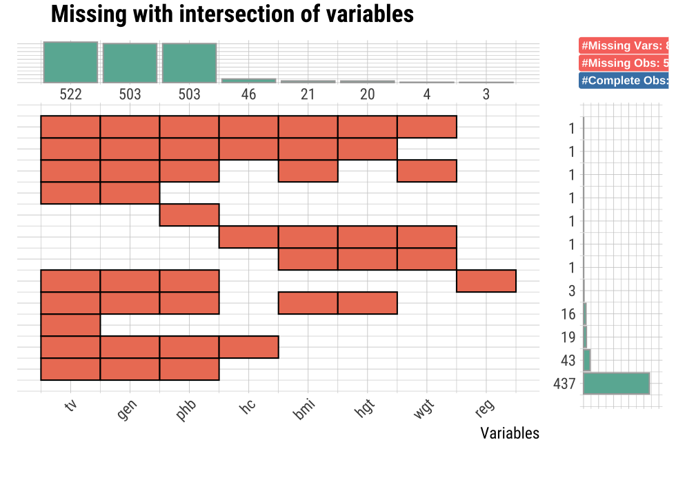

Introduce dlookr package for diagnose data quality
After you have acquired the data, you should do the following:
The dlookr package makes these steps fast and easy:
This document introduces Data Quality Diagnosis methods provided by the dlookr package. You will learn how to diagnose the quality of tbl_df data that inherits from data.frame and data.frame with functions provided by dlookr.
dlookr increases synergy with dplyr. Particularly in data exploration and data wrangle, it increases the efficiency of the tidyverse package group.
Data diagnosis supports the following data structures.
To illustrate basic use of the dlookr package, use the flights data from the nycflights13 package. The flights data frame is data about departure and arrival on all flights departing from NYC in 2013.
library(nycflights13)
dim(flights)
[1] 336776 19flights
# A tibble: 336,776 x 19
year month day dep_time sched_dep_time dep_delay arr_time
<int> <int> <int> <int> <int> <dbl> <int>
1 2013 1 1 517 515 2 830
2 2013 1 1 533 529 4 850
3 2013 1 1 542 540 2 923
4 2013 1 1 544 545 -1 1004
# … with 336,772 more rows, and 12 more variables:
# sched_arr_time <int>, arr_delay <dbl>, carrier <chr>,
# flight <int>, tailnum <chr>, origin <chr>, dest <chr>,
# air_time <dbl>, distance <dbl>, hour <dbl>, minute <dbl>,
# time_hour <dttm>dlookr aims to diagnose the data and to select variables that can not be used for data analysis or to find the variables that need to be calibrated.:
diagnose() provides basic diagnostic information for variables.diagnose_category() provides detailed diagnostic information for categorical variables.diagnose_numeric() provides detailed diagnostic information for numerical variables.diagnose_outlier() and plot_outlier() provide information and visualization of outliers.diagnose()diagnose() allows to diagnosis a variables in a data frame. Like function of dplyr, the first argument is the tibble (or data frame). The second and subsequent arguments refer to variables within that data frame.
The variables of the tbl_df object returned by diagnose () are as follows.
variables : variable namestypes : the data type of the variablesmissing_count : number of missing valuesmissing_percent : percentage of missing valuesunique_count : number of unique valuesunique_rate : rate of unique value. unique_count / number of observationFor example, we can diagnose all variables in flights:
diagnose(flights)
# A tibble: 19 x 6
variables types missing_count missing_percent unique_count
<chr> <chr> <int> <dbl> <int>
1 year integer 0 0 1
2 month integer 0 0 12
3 day integer 0 0 31
4 dep_time integer 8255 2.45 1319
# … with 15 more rows, and 1 more variable: unique_rate <dbl>Missing Value(NA) : Variables with many missing values, ie those with a missing_percent close to 100, should be excluded from the analysis.Unique value : Variables with a unique value (unique_count = 1) are considered to be excluded from data analysis. And if the data type is not numeric (integer, numeric) and the number of unique values is equal to the number of observations (unique_rate = 1), then the variable is likely to be an identifier. Therefore, this variable is also not suitable for the analysis model.year can be considered not to be used in the analysis model since unique_count is 1. However, you do not have to remove it if you configure date as a combination of year, month, and day.
For example, we can diagnose only a few selected variables:
# Select columns by name
diagnose(flights, year, month, day)
# A tibble: 3 x 6
variables types missing_count missing_percent unique_count
<chr> <chr> <int> <dbl> <int>
1 year integer 0 0 1
2 month integer 0 0 12
3 day integer 0 0 31
# … with 1 more variable: unique_rate <dbl># Select all columns between year and day (include)
diagnose(flights, year:day)
# A tibble: 3 x 6
variables types missing_count missing_percent unique_count
<chr> <chr> <int> <dbl> <int>
1 year integer 0 0 1
2 month integer 0 0 12
3 day integer 0 0 31
# … with 1 more variable: unique_rate <dbl># Select all columns except those from year to day (exclude)
diagnose(flights, -(year:day))
# A tibble: 16 x 6
variables types missing_count missing_percent unique_count
<chr> <chr> <int> <dbl> <int>
1 dep_time integer 8255 2.45 1319
2 sched_dep_time integer 0 0 1021
3 dep_delay numeric 8255 2.45 528
4 arr_time integer 8713 2.59 1412
# … with 12 more rows, and 1 more variable: unique_rate <dbl>By using with dplyr, variables including missing values can be sorted by the weight of missing values.:
flights %>%
diagnose() %>%
select(-unique_count, -unique_rate) %>%
filter(missing_count > 0) %>%
arrange(desc(missing_count))
# A tibble: 6 x 4
variables types missing_count missing_percent
<chr> <chr> <int> <dbl>
1 arr_delay numeric 9430 2.80
2 air_time numeric 9430 2.80
3 arr_time integer 8713 2.59
4 dep_time integer 8255 2.45
# … with 2 more rowsdiagnose_numeric()diagnose_numeric() diagnoses numeric(continuous and discrete) variables in a data frame. Usage is the same as diagnose() but returns more diagnostic information. However, if you specify a non-numeric variable in the second and subsequent argument list, the variable is automatically ignored.
The variables of the tbl_df object returned by diagnose_numeric() are as follows.
min : minimum valueQ1 : 1/4 quartile, 25th percentilemean : arithmetic meanmedian : median, 50th percentileQ3 : 3/4 quartile, 75th percentilemax : maximum valuezero : number of observations with a value of 0minus : number of observations with negative numbersoutlier : number of outliersThe summary() function summarizes the distribution of individual variables in the data frame and outputs it to the console. The summary values of numeric variables are min, Q1, mean, median, Q3 and max, which help to understand the distribution of data.
However, the result displayed on the console has the disadvantage that the analyst has to look at it with the eyes. However, when the summary information is returned in a data frame structure such as tbl_df, the scope of utilization is expanded. diagnose_numeric() supports this.
zero, minus, and outlier are useful measures to diagnose data integrity. For example, numerical data in some cases cannot have zero or negative numbers. A numeric variable called employee salary cannot have negative numbers or zeros. Therefore, this variable should be checked for the inclusion of zero or negative numbers in the data diagnosis process.
diagnose_numeric() can diagnose all numeric variables of flights as follows.:
diagnose_numeric(flights)
# A tibble: 14 x 10
variables min Q1 mean median Q3 max zero minus outlier
<chr> <dbl> <dbl> <dbl> <dbl> <dbl> <dbl> <int> <int> <int>
1 year 2013 2013 2013 2013 2013 2013 0 0 0
2 month 1 4 6.55 7 10 12 0 0 0
3 day 1 8 15.7 16 23 31 0 0 0
4 dep_time 1 907 1349. 1401 1744 2400 0 0 0
# … with 10 more rowsIf a numeric variable can not logically have a negative or zero value, it can be used with filter() to easily find a variable that does not logically match:
diagnose_numeric(flights) %>%
filter(minus > 0 | zero > 0)
# A tibble: 3 x 10
variables min Q1 mean median Q3 max zero minus outlier
<chr> <dbl> <dbl> <dbl> <dbl> <dbl> <dbl> <int> <int> <int>
1 dep_delay -43 -5 12.6 -2 11 1301 16514 183575 43216
2 arr_delay -86 -17 6.90 -5 14 1272 5409 188933 27880
3 minute 0 8 26.2 29 44 59 60696 0 0diagnose_category()diagnose_category() diagnoses the categorical(factor, ordered, character) variables of a data frame. The usage is similar to diagnose() but returns more diagnostic information. If you specify a non-categorical variable in the second and subsequent argument list, the variable is automatically ignored.
The top argument specifies the number of levels to return for each variable. The default is 10, which returns the top 10 level. Of course, if the number of levels is less than 10, all levels are returned.
The variables of the tbl_df object returned by diagnose_category() are as follows.
variables : variable nameslevels: level namesN : number of observationfreq : number of observation at the levelsratio : percentage of observation at the levelsrank : rank of occupancy ratio of levels`diagnose_category() can diagnose all categorical variables of flights as follows.:
diagnose_category(flights)
# A tibble: 43 x 6
variables levels N freq ratio rank
<chr> <chr> <int> <int> <dbl> <int>
1 carrier UA 336776 58665 17.4 1
2 carrier B6 336776 54635 16.2 2
3 carrier EV 336776 54173 16.1 3
4 carrier DL 336776 48110 14.3 4
# … with 39 more rowsIn collaboration with filter() in the dplyr package, we can see that the tailnum variable is ranked in top 1 with 2,512 missing values in the case where the missing value is included in the top 10:
# A tibble: 1 x 6
variables levels N freq ratio rank
<chr> <chr> <int> <int> <dbl> <int>
1 tailnum <NA> 336776 2512 0.746 1The following example returns a list where the level’s relative percentage is 0.01% or less. Note that the value of the top argument is set to a large value such as 500. If the default value of 10 was used, values below 0.01% would not be included in the list:
flights %>%
diagnose_category(top = 500) %>%
filter(ratio <= 0.01)
# A tibble: 10 x 6
variables levels N freq ratio rank
<chr> <chr> <int> <int> <dbl> <int>
1 carrier OO 336776 32 0.00950 16
2 dest JAC 336776 25 0.00742 97
3 dest PSP 336776 19 0.00564 98
4 dest EYW 336776 17 0.00505 99
# … with 6 more rowsIn the analytics model, you can also consider removing levels where the relative frequency is very small in the observations or, if possible, combining them together.
diagnose_outlier()diagnose_outlier() diagnoses the outliers of the numeric (continuous and discrete) variables of the data frame. The usage is the same as diagnose().
The variables of the tbl_df object returned by diagnose_outlier() are as follows.
outliers_cnt : number of outliersoutliers_ratio : percent of outliersoutliers_mean : arithmetic average of outlierswith_mean : arithmetic average of with outlierswithout_mean : arithmetic average of without outliersdiagnose_outlier() can diagnose outliers of all numerical variables on flights as follows:
diagnose_outlier(flights)
# A tibble: 14 x 6
variables outliers_cnt outliers_ratio outliers_mean with_mean
<chr> <int> <dbl> <dbl> <dbl>
1 year 0 0 NaN 2013
2 month 0 0 NaN 6.55
3 day 0 0 NaN 15.7
4 dep_time 0 0 NaN 1349.
# … with 10 more rows, and 1 more variable: without_mean <dbl>Numeric variables that contained outliers are easily found with filter().:
diagnose_outlier(flights) %>%
filter(outliers_cnt > 0)
# A tibble: 5 x 6
variables outliers_cnt outliers_ratio outliers_mean with_mean
<chr> <int> <dbl> <dbl> <dbl>
1 dep_delay 43216 12.8 93.1 12.6
2 arr_delay 27880 8.28 121. 6.90
3 flight 1 0.000297 8500 1972.
4 air_time 5448 1.62 400. 151.
# … with 1 more row, and 1 more variable: without_mean <dbl>The following example finds a numeric variable with an outlier ratio of 5% or more, and then returns the result of dividing mean of outliers by overall mean in descending order:
diagnose_outlier(flights) %>%
filter(outliers_ratio > 5) %>%
mutate(rate = outliers_mean / with_mean) %>%
arrange(desc(rate)) %>%
select(-outliers_cnt)
# A tibble: 2 x 6
variables outliers_ratio outliers_mean with_mean without_mean rate
<chr> <dbl> <dbl> <dbl> <dbl> <dbl>
1 arr_delay 8.28 121. 6.90 -3.69 17.5
2 dep_delay 12.8 93.1 12.6 0.444 7.37In cases where the mean of the outliers is large relative to the overall average, it may be desirable to impute or remove the outliers.
plot_outlier()plot_outlier() visualizes outliers of numerical variables(continuous and discrete) of data.frame. Usage is the same diagnose().
The plot derived from the numerical data diagnosis is as follows.
plot_outlier() can visualize an outliers in the arr_delay variable of flights as follows:
flights %>%
plot_outlier(arr_delay)

The following example uses diagnose_outlier(), plot_outlier(), and dplyr packages to visualize all numerical variables with an outlier ratio of 5% or higher.
Analysts should look at the results of the visualization to decide whether to remove or replace outliers. In some cases, you should consider removing variables with outliers from the data analysis model.
Looking at the results of the visualization, arr_delay shows that the observed values without outliers are similar to the normal distribution. In the case of a linear model, we might consider removing or imputing outliers.
It is important to look at the missing values of individual variables, but it is also important to look at the relationship between the variables including the missing values.
dlookr provides a visualization tool that looks at the relationship of variables including missing values.
plot_na_pareto()plot_na_pareto() draws a pareto chart by collecting variables including missing values.
mice::boys %>%
plot_na_pareto(col = "blue")

The default value of the only_na argument is FALSE, which includes variables that do not contain missing values, but if this value is set to TRUE, only variables containing missing values are visualized. The variable age was excluded from this plot.
mice::boys %>%
plot_na_pareto(only_na = TRUE, main = "Pareto Chart for mice::boys")
The rating of the variable is expressed as a proportion of missing values. It is calculated as the ratio of missing values. If it is [0, 0.05), it is Good, if it is [0.05, 0.4) it is OK, if it is [0.4, 0.8) it is Bad, and if it is [0.8, 1.0] it is Remove. You can override this grade using the grade argument as follows:
If the plot argument is set to FALSE, information about missing values is returned instead of plotting.
plot_na_pareto(mice::boys, only_na = TRUE, plot = FALSE)
plot_na_hclust()It is important to look at the relationship between variables, including missing values. plot_na_hclust() visualizes the relationship of variables that contain missing values. This function rearranges the positions of variables using hierarchical clustering. Then, the expression of the missing value is visualized by grouping similar variables.
mice::boys %>%
plot_na_hclust(main = "Distribution of missing value")

plot_na_intersect()plot_na_intersect() visualize the combinations of missing value across cases.
The visualization consists of four parts. The bottom left, which is the most basic, visualizes the case of cross(intersection)-combination. The x-axis is the variable including the missing value, and the y-axis represents the case of a combination of variables. And on the marginal of the two axes, the frequency of the case is expressed as a bar graph. Finally, the visualization at the top right expresses the number of variables including missing values in the data set, and the number of observations including missing values and complete cases .
This example visualize the combination variables that is include missing value.
mice::boys %>%
plot_na_intersect()

If the n_vars argument is used, only the top n variables containing many missing values are visualized.
mice::boys %>%
plot_na_intersect(n_vars = 5)
If you use the n_intersacts argument, only the top n numbers of variable combinations(intersection) including missing values are visualized. and If you want to visualize the combination variables that is include missing value and complete case. You just add only_na = FALSE.
mice::boys %>%
plot_na_intersect(only_na = FALSE, n_intersacts = 7)
dlookr provides two automated data diagnostic reports:
diagnose_web_report()diagnose_web_report() create dynamic report for object inherited from data.frame(tbl_df, tbl, etc) or data.frame.
The contents of the report are as follows.:
diagnose_web_report() generates various reports with the following arguments.
The following script creates a quality diagnosis report for the tbl_df class object, flights.
flights %>%
diagnose_web_report(subtitle = "flights", output_dir = "./",
output_file = "Diagn.html", theme = "blue")
(#fig:diag_web_title)The part of the report
(#fig:diag_web_content)The dynamic contents of the report
diagnose_paged_report()diagnose_paged_report() create static report for object inherited from data.frame(tbl_df, tbl, etc) or data.frame.
The contents of the report are as follows.:
diagnose_paged_report() generates various reports with the following arguments.
The following script creates a quality diagnosis report for the tbl_df class object, flights.
flights %>%
diagnose_paged_report(subtitle = "flights", output_dir = "./",
output_file = "Diagn.pdf", theme = "blue")
(#fig:diag_paged_cover)The part of the report
(#fig:diag_paged_cntent)The dynamic contents of the report
The DBMS table diagnostic function supports In-database mode that performs SQL operations on the DBMS side. If the size of the data is large, using In-database mode is faster.
It is difficult to obtain anomaly or to implement the sampling-based algorithm in SQL of DBMS. So some functions do not yet support In-database mode. In this case, it is performed in In-memory mode in which table data is brought to R side and calculated. In this case, if the data size is large, the execution speed may be slow. It supports the collect_size argument, which allows you to import the specified number of samples of data into R.
diagonse()diagnose_category()diagnose_numeric()diagnose_outlier()plot_outlier()diagnose_web_report()diagnose_paged_report()Copy the carseats data frame to the SQLite DBMS and create it as a table named TB_CARSEATS. Mysql/MariaDB, PostgreSQL, Oracle DBMS, other DBMS are also available for your environment.
if (!require(DBI)) install.packages('DBI')
if (!require(RSQLite)) install.packages('RSQLite')
if (!require(dplyr)) install.packages('dplyr')
if (!require(dbplyr)) install.packages('dbplyr')
library(dplyr)
carseats <- ISLR::Carseats
carseats[sample(seq(NROW(carseats)), 20), "Income"] <- NA
carseats[sample(seq(NROW(carseats)), 5), "Urban"] <- NA
# connect DBMS
con_sqlite <- DBI::dbConnect(RSQLite::SQLite(), ":memory:")
# copy carseats to the DBMS with a table named TB_CARSEATS
copy_to(con_sqlite, carseats, name = "TB_CARSEATS", overwrite = TRUE)
Use dplyr::tbl() to create a tbl_dbi object, then use it as a data frame object. That is, the data argument of all diagnose function is specified as tbl_dbi object instead of data frame object.
# Diagnosis of all columns
con_sqlite %>%
tbl("TB_CARSEATS") %>%
diagnose()
# A tibble: 11 x 6
variables types missing_count missing_percent unique_count
<chr> <chr> <dbl> <dbl> <int>
1 Sales double 0 0 336
2 CompPrice double 0 0 73
3 Income double 20 5 97
4 Advertising double 0 0 28
# … with 7 more rows, and 1 more variable: unique_rate <dbl>
# Positions values select columns, and In-memory mode
con_sqlite %>%
tbl("TB_CARSEATS") %>%
diagnose(1, 3, 8, in_database = FALSE)
# A tibble: 3 x 6
variables types missing_count missing_percent unique_count
<chr> <chr> <int> <dbl> <int>
1 Sales numeric 0 0 336
2 Income numeric 20 5 97
3 Age numeric 0 0 56
# … with 1 more variable: unique_rate <dbl>
# Positions values select columns, and In-memory mode and collect size is 200
con_sqlite %>%
tbl("TB_CARSEATS") %>%
diagnose(-8, -9, -10, in_database = FALSE, collect_size = 200)
# A tibble: 8 x 6
variables types missing_count missing_percent unique_count
<chr> <chr> <int> <dbl> <int>
1 Sales numeric 0 0 182
2 CompPrice numeric 0 0 65
3 Income numeric 6 3 83
4 Advertising numeric 0 0 23
# … with 4 more rows, and 1 more variable: unique_rate <dbl># Positions values select variables, and In-memory mode and collect size is 200
con_sqlite %>%
tbl("TB_CARSEATS") %>%
diagnose_category(7, in_database = FALSE, collect_size = 200)
# A tibble: 3 x 6
variables levels N freq ratio rank
<chr> <chr> <int> <int> <dbl> <int>
1 ShelveLoc Medium 200 113 56.5 1
2 ShelveLoc Bad 200 47 23.5 2
3 ShelveLoc Good 200 40 20 3
# Positions values select variables
con_sqlite %>%
tbl("TB_CARSEATS") %>%
diagnose_category(-7)
# A tibble: 5 x 6
variables levels N freq ratio rank
<chr> <chr> <int> <int> <dbl> <int>
1 Urban Yes 400 277 69.2 1
2 Urban No 400 118 29.5 2
3 Urban <NA> 400 5 1.25 3
4 US Yes 400 258 64.5 1
# … with 1 more row# Diagnosis of all numerical variables
con_sqlite %>%
tbl("TB_CARSEATS") %>%
diagnose_numeric()
# A tibble: 8 x 10
variables min Q1 mean median Q3 max zero minus
<chr> <dbl> <dbl> <dbl> <dbl> <dbl> <dbl> <int> <int>
1 Sales 0 5.39 7.50 7.49 9.32 16.3 1 0
2 CompPrice 77 115 125. 125 135 175 0 0
3 Income 21 42 68.2 69 90.2 120 0 0
4 Advertising 0 0 6.64 5 12 29 144 0
# … with 4 more rows, and 1 more variable: outlier <int>
# Positive values select variables, and In-memory mode and collect size is 200
con_sqlite %>%
tbl("TB_CARSEATS") %>%
diagnose_numeric(Sales, Income, collect_size = 200)
# A tibble: 2 x 10
variables min Q1 mean median Q3 max zero minus outlier
* <chr> <dbl> <dbl> <dbl> <dbl> <dbl> <dbl> <int> <int> <int>
1 Sales 0 5.26 7.42 7.50 9.10 14.9 1 0 0
2 Income 21 48 71.4 73 93 120 0 0 0# A tibble: 1 x 6
variables outliers_cnt outliers_ratio outliers_mean with_mean
<chr> <int> <dbl> <dbl> <dbl>
1 Price 5 1.25 100. 116.
# … with 1 more variable: without_mean <dbl># Visualization of numerical variables with a ratio of
# outliers greater than 1%
# the result is same as a data.frame, but not display here. reference above in document.
con_sqlite %>%
tbl("TB_CARSEATS") %>%
plot_outlier(con_sqlite %>%
tbl("TB_CARSEATS") %>%
diagnose_outlier() %>%
filter(outliers_ratio > 1) %>%
select(variables) %>%
pull())
The following shows several examples of creating an data diagnosis report for a DBMS table.
Using the collect_size argument, you can perform data diagnosis with the corresponding number of sample data. If the number of data is very large, use collect_size.